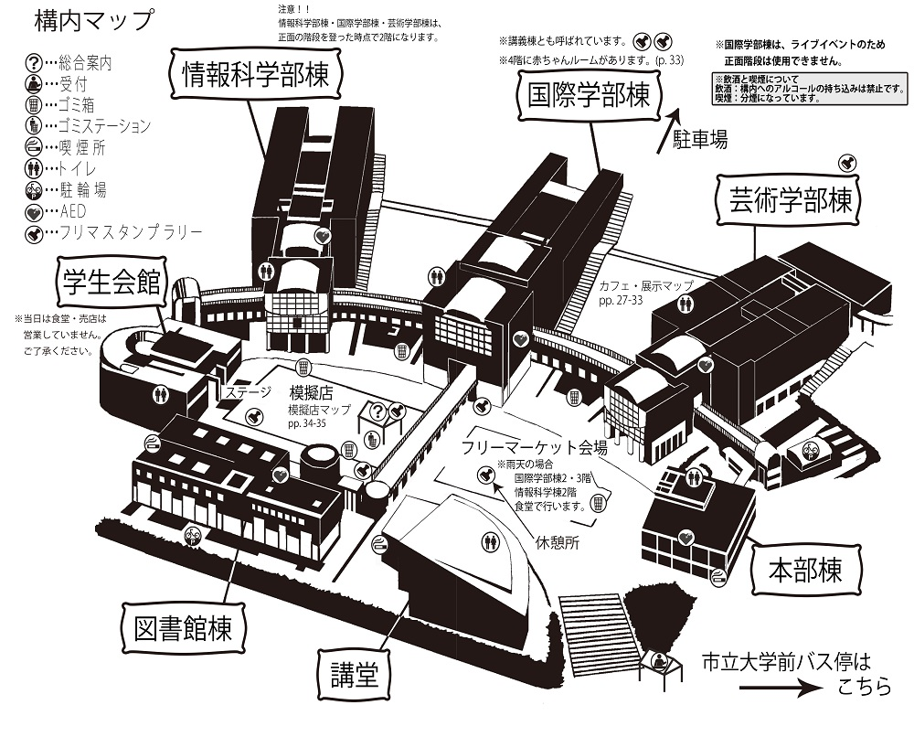

第27回 市大祭
第27回 市大祭開催日時
| 2020年10月24日(土) | 10:00~21:00 |
| 2020年10月25日(日) | 10:00~20:30 |
開催場所
広島市立大学構内
(広島市安佐南区大塚東3-4-1)
(広島市安佐南区大塚東3-4-1)
開催内容
ステージイベント・カフェ・模擬店・展示・フリーマーケット・スタンプラリー など
構内マップ

注意事項
大学内での飲酒はご遠慮ください.
大学内において、学内全面禁酒とさせて頂いております。
それに伴い、お酒の販売も致しておりません.
お酒の持ち込み、販売、飲酒されている方を見かけましたら、当大学祭実行委員までお声かけください.
ご理解とご協力をお願いします.
なお、当大学祭において飲酒で生じた事故等の損害は補償致しかねます.
飲食物の大学外への持ち出しはご遠慮ください.
大学祭で出品されている飲食物は保存料などを使用しておりません.
長期間、安全で美味しく飲む・食べることができないため大学祭で購入した飲食物は必ず大学敷地内で消費するようにしてください.
ペットの入場はご遠慮ください.
ペット等、生き物のご同伴はご遠慮願います.
但し盲導犬、介助犬、聴導犬等の補助犬は例外とします.
喫煙はご遠慮ください.
大学の敷地内は全面禁煙となっております.
ご理解とご協力をお願いします.